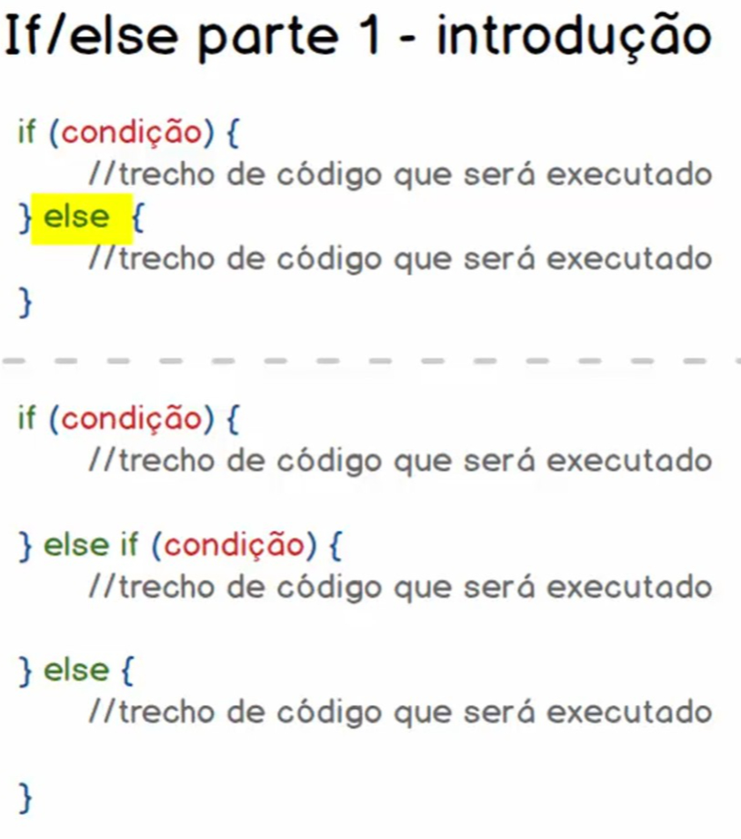

<!DOCTYPE html>
<html lang="pt-br">
  <head>
    <!-- Meta tags Obrigatórias -->
    <meta charset="utf-8">
    <meta name="viewport" content="width=device-width, initial-scale=1, shrink-to-fit=no">

    <!-- Bootstrap CSS -->
    <link rel="stylesheet" href="https://stackpath.bootstrapcdn.com/bootstrap/4.1.3/css/bootstrap.min.css" integrity="sha384-MCw98/SFnGE8fJT3GXwEOngsV7Zt27NXFoaoApmYm81iuXoPkFOJwJ8ERdknLPMO" crossorigin="anonymous">

    <!-- Font Awesome -->
      <link rel="stylesheet" href="https://cdnjs.cloudflare.com/ajax/libs/font-awesome/6.5.0/css/all.min.css">

    <!-- Estilo customizado -->
    <link rel="stylesheet" type="text/css" href="css/estilo.css">

    <script>
        // //160. Concatenação **********************************************************
        // var nome = prompt('Digite o seu nome: ') //Tudo q for digitado é transformado em string
        // var idade = prompt('Digite sua idade: ') //Tudo q for digitado é transformado em string
        // document.write('<h4>Olá ' + nome + ', tudo  bem? Sua idade é : ' + idade + '</h4>')     
        // document.write('<h4>Tipo da var nome: ' + typeof nome + '</h4>')
        
        // //162. Variáveis null e undefined **********************************************************
        // //Null
        // var nome = null
        // //Undefined
        // var idade
        // document.write('<h2>Tipo da var nome: ' + nome + '</h2>')       
        // document.write('<h2>Tipo da var idade: ' + idade + '</h2>')
        
        // // 163. Alterando valores de variáveis**********************************************************
        // //Undefined
        // var teste = 24
        // document.write('<h2 class="text-primary">Tipo da var teste: ' + typeof teste + '</h2>')       
        // var teste = "Júlio"
        // document.write('<h2 class="text-primary">Tipo da var teste: ' + typeof teste + '</h2>')   
        
        // //164. Revisão e desafio A-B-C **********************************************************
        // var a = 30
        // var b = 10
        // var c = null

        // document.write('<h2 class="text-primary">a = ' + a + ', b = ' + b + ', c = ' + c + '</h2>')

        // //Inverter valor de a com b
        // var c = a + b
        // var a = c - a
        // var b = c - a

        // document.write('<h2 class="text-primary">a = ' + a + ', b = ' + b + ', c = ' + c + '</h2>')
        // console.log(a, b, c)

        
        // // 167. Ifelse parte 2 - Praticando com operadores de comparação *************************************
        // var num1 = 7, num2 = 7
        // var texto = '7'

        // if (num1 !== num2) {
        //   document.write('<span class="text-primary">' + num1 + ' ' + typeof num1 + ' !==' + num2 + ' ' + typeof num2 + '</span><span class="text-success ml-3">(VERDADE)</span>')
        // } else {
        //   document.write('<span class="text-primary">' + num1 + ' ' + typeof num1 + ' !==' + num2 + ' ' + typeof num2 + '</span><span class="text-danger ml-3">(FALSO)</span>')
        // }

        // if (num1 <= texto) {
        //   document.write('<br><span class="text-primary">' + num1 + ' ' + typeof num1 + ' <=' + texto + ' ' + typeof texto + '</span><span class="text-success ml-3">(VERDADE)</span>')
        // } else {
        //   document.write('<span class="text-primary">' + num1 + ' ' + typeof num1 + ' <=' + texto + ' ' + typeof texto + '</span><span class="text-danger ml-3">(FALSO)</span>')
        // }


        // // 169. Casting de tipos com toString(), parseInt() e parseFloat()*****************************************
        // var variavel1 = '10.30', variavel2 = '20.30'

        // document.write('<div class="text-primary">' + variavel1 + variavel2 + '</div>')
        // document.write('<div class="text-primary">' + (variavel1 + variavel2) + '</div>')

        // variavel1 = parseInt(variavel1)
        // variavel2 = parseFloat(variavel2)

        // document.write('<div class="text-primary">' + variavel1 + variavel2 + '</div>')
        // document.write('<div class="text-primary">' + (variavel1 + variavel2) + '</div>')

        // variavel1 = variavel1.toString()
        // variavel2 = variavel2.toString()
        
        // document.write('<div class="text-primary">' + variavel1 + variavel2 + '</div>')
        // document.write('<div class="text-primary">' + (variavel1 + variavel2) + '</div>')

        // // 172. Operador ternário
        // var nota = prompt('Digite uma nota: ') 
        // var faltas = prompt('Digite a quantidade de vezes q vc faltou: ')

        // var media = 7
        // var faltas_maximas = 15

        // var resultado = (nota >= media && faltas <= faltas_maximas) ? 'Aprovado' : 'Reprovado' 
        // document.write('<div class="text-primary">' + resultado + '</div>')
        
    
        // // 173. Atividades para fixação do
        // var idade = prompt('Digite sua idade: ')

        // if (idade >= 0 && idade < 15) {
        //     document.write('<div class="text-primary">Criança</div>')
        //     alert('Criança')
        // } else if (idade >= 15 && idade < 30) {
        //     document.write('<div class="text-primary">Jovem</div>')
        // } else if (idade >= 30 && idade < 60) {
        //     document.write('<div class="text-primary">Adulto</div>')
        // } else if (idade >= 60 && idade < 200) {
        //     document.write('<div class="text-primary">Idoso</div>')
        // } else {
        //     document.write('<div class="text-danger">Não nasceu ou está mortinho já</div>')
        // }


        // // 175. Switch na prática

        // var parametro = 2

        // switch (parametro) {
        //     case 1:
        //         document.write('<div class="text-danger">Parametro 1</div>')
        //         break
        //     case 2:
        //         document.write('<div class="text-danger">Parametro 2</div>')
        //     case 3:
        //         document.write('<div class="text-danger">Parametro 3</div>')
        //         break
        //     default:
        //         document.write('<div class="text-danger">Defalt</div>')
        // }


        // // 177. Praticando com operadores aritméticos
        // var num1 = prompt('Digite o valor de num1')
        // var num2 = prompt('Digite o valor de num2')

        // num1 = parseInt(num1)
        // num2 = parseInt(num2)

        // document.write('A soma entre ' + num1 + ' e ' + num2 + ' é: ' + (num1 + num2) + '<br />')
        // document.write('A subtração entre ' + num1 + ' e ' + num2 + ' é: ' + (num1 - num2) + '<br />')
        // document.write('A multiplicação entre ' + num1 + ' e ' + num2 + ' é: ' + (num1 * num2) + '<br />')
        // document.write('A divisão entre ' + num1 + ' e ' + num2 + ' é: ' + (num1 / num2) + '<br />')
        // document.write('O módulo entre ' + num1 + ' e ' + num2 + ' é: ' + (num1 % num2) + '<br />')
        // document.write('O incremento de ++num1 ' + num1 + ' é: ' + (++num1) + '<br />')
        // document.write('O incremento de num1++ ' + num1 + ' é: ' + (num1++) + '<br />')
        // document.write(num1 + '<br />')
        // document.write('O decremento de ++num1 ' + num1 + ' é: ' + (--num1) + '<br />')
        // document.write('O decremento de num1++ ' + num1 + ' é: ' + (num1--) + '<br />')
        // document.write(num1)
        // document.write('A exponenciação de num1 a 2 ' + num1 + '² = ' + (num1**2) + '<br />')
        // document.write('A exponenciação de num1 a 2 ' + num1 + '² = ' + (num1**=2) + '<br />')


        // 178. Operações aritméticas na atribuição de valores
        var teste = 10

        teste += 5
        document.write('<h2 class="text-primary">a = ' + (teste) + '</h2>')
        teste -= 5
        document.write('<h2 class="text-primary">a = ' + (teste) + '</h2>')
        teste *= 5
        document.write('<h2 class="text-primary">a = ' + (teste) + '</h2>')
        teste /= 5
        document.write('<h2 class="text-primary">a = ' + (teste) + '</h2>')
        teste %= 5
        document.write('<h2 class="text-primary">a = ' + (teste) + '</h2>')

        teste = 'Olá, '
        teste += 'Júlio'
        document.write('<h2 class="text-primary">a = ' + (teste) + '</h2>')
        

</script>
    <title>178. Operações aritméticas na atribuição de valores</title>
  </head>
  <body>
    <!-- 167. Ifelse parte 2 - Praticando com operadores de comparação *************************************
    <div class="mt-5">
      
      
    </div> -->
    
    
    <!-- 173. Atividades para fixação do
    <div>
        <h5>
            1. Crie uma aplicação capaz de identificar a faixa etária com base na idade informada pelo usuário. Considere os seguintes critérios:
        </h5> 
        <ul>
            <li>Se a idade informada for maior ou igual a 0 e menor que 15, exibir a mensagem “Criança”.</li>
            <li>Se a idade informada for maior ou igual a 15 e menor que 30, exibir a mensagem “Jovem”.</li>
            <li>Se a idade informada for maior ou igual a 30 e menor que 60, exibir a mensagem “Adulto”.</li>
            <li>Se a idade informada for maior ou igual a 60, exibir a mensagem “Idoso”.</li>
            <li>Fique à vontade para utilizar qualquer uma das funções aprendidas para exibição de dados para o usuário.</li>
        </ul> 
    </div> -->


    
    <!-- JavaScript (Opcional) -->
    <!-- jQuery primeiro, depois Popper.js, depois Bootstrap JS -->
    <script src="https://code.jquery.com/jquery-3.3.1.slim.min.js" integrity="sha384-q8i/X+965DzO0rT7abK41JStQIAqVgRVzpbzo5smXKp4YfRvH+8abtTE1Pi6jizo" crossorigin="anonymous"></script>
    <script src="https://cdnjs.cloudflare.com/ajax/libs/popper.js/1.14.3/umd/popper.min.js" integrity="sha384-ZMP7rVo3mIykV+2+9J3UJ46jBk0WLaUAdn689aCwoqbBJiSnjAK/l8WvCWPIPm49" crossorigin="anonymous"></script>
    <script src="https://stackpath.bootstrapcdn.com/bootstrap/4.1.3/js/bootstrap.min.js" integrity="sha384-ChfqqxuZUCnJSK3+MXmPNIyE6ZbWh2IMqE241rYiqJxyMiZ6OW/JmZQ5stwEULTy" crossorigin="anonymous"></script>
  </body>
</html>